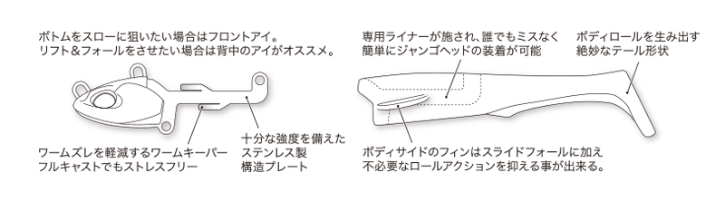
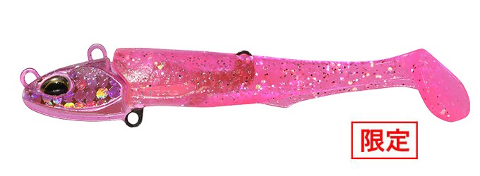
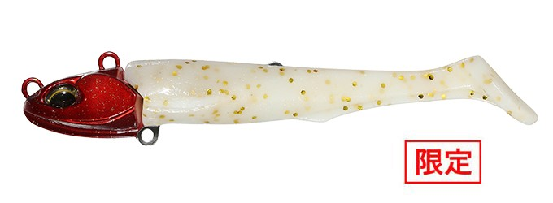
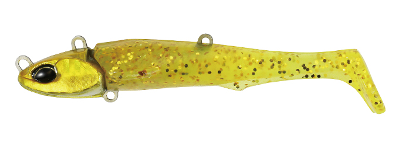
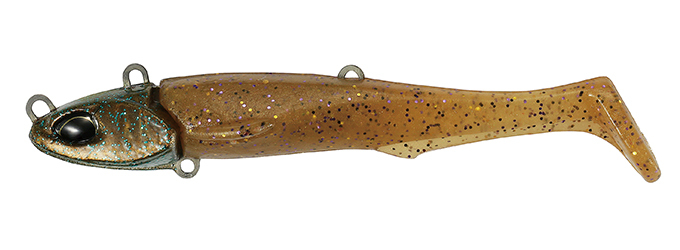

ビーチウォーカー ジャンゴ
（Beach Walker Jumgo）
ビーチウォーカー ジャンゴ（Beach Walker Jumgo）はDUO（デュオ）のジグヘッドワームです。
一口サイズのマゴチ攻略設計で、腹側に1か所、背中側に2か所のフックアイがあり、狙い方に合わせて使い分けられるのが最大の特徴です。

画像出典:DUO公式HP
スペック
- メーカー
- DUO（デュオ）
- タイプ
- ジグヘッドワーム（シャッド）
- サイズ
- 3インチ
- 重さ
- 14g（亜鉛製）／21g（鉛製）／27g（鉛製）
- フック
- #7
- ターゲット
- マゴチ・ヒラメ
- 価格
- 1,265円（税込・シャッドセット）
▼今すぐチェック

ジャンゴの特徴
一口サイズでマゴチを狙い撃つ、フックアイを選べるジグヘッドワーム
-
狙い方で選べる3つのフックアイ
フックアイを腹側に1か所、背中側に2か所設けている。ボトムをスローに狙いたい時はフロントアイ、リフト&フォールをさせたい時は背中のアイがおすすめ。背中のアイを選べば、ボトムをダイレクトに攻められる。
-
ワームがずれにくく、誰でも簡単に装着
ワームのずれを減らすワームキーパーを備え、フルキャストしてもストレスなく使える。ワームには専用のライナーがあり、誰でもミスなく簡単にジャンゴヘッドに装着できる。
-
スライドフォールと絶妙なテール
ボディサイドのフィンがスライドフォールを生み、不要なロールも抑える。テールの形状がボディのロールを引き出し、一口サイズでもしっかり誘える。

画像出典:DUO公式HP
ジャンゴの使い方
ボトムまで沈めてから、ゆっくり巻くのが基本です。
ボトムをスローに引きたい時はフロントアイ、リフト&フォールで誘いたい時は背中のアイにラインを結び替えましょう。マゴチは底にいる魚なので、底から離しすぎないのがコツです。
ジャンゴの得意な状況
サーフや河口で、ボトムのマゴチを狙う場面が出番です。
一口サイズで食い込みがよいので、小さなベイトを食べている時や、アタリはあるのに乗らない時にも向いています。
アイを替えるだけで攻め方を変えられるので、同じ場所でもマゴチが釣れるチャンスを広げられます。
ワンポイント
重さは水深と流れに合わせて、底を取れる軽いほうから選ぶと、ボトムの感覚がつかみやすくなります。14gは亜鉛製なので、同じ重さでも鉛より大きめのシルエットになります。
人気カラー
ジャンゴの人気カラーを紹介します。

座布団UVクリアピンクUV対応のクリアピンク。サーフの定番のピンク系で見せたい時に。

座布団グローレッドヘッドグロー対応のレッドヘッド。朝夕のマズメなどローライトに。

マッディーゴールドGB／ハイパーゴールド濁りの入った時に見せやすいゴールド系。

どぜうGB／夜光どぜうドジョウをイメージしたカラー。夜光仕様で暗い時間帯にも。
画像出典:DUO公式HP
▼今すぐチェック
ジャンゴに似ているルアー
-
 サリュー
アダスタ
詳細はこちら＞
サリュー
アダスタ
詳細はこちら＞
サーフ用のジグヘッドワーム。同じくヒラメ・マゴチをボトム付近で狙う時の候補。
-
 ぶっ飛び静完全セット
カルティバ
詳細はこちら＞
ぶっ飛び静完全セット
カルティバ
詳細はこちら＞
飛距離を重視したジグヘッドワームのセット。遠くのポイントを狙いたい時に。
-
 砂団子
ジャクソン
詳細はこちら＞
砂団子
ジャクソン
詳細はこちら＞
ヘッドとブレードが付いたワーム。ブレードのフラッシングで誘いたい時に。